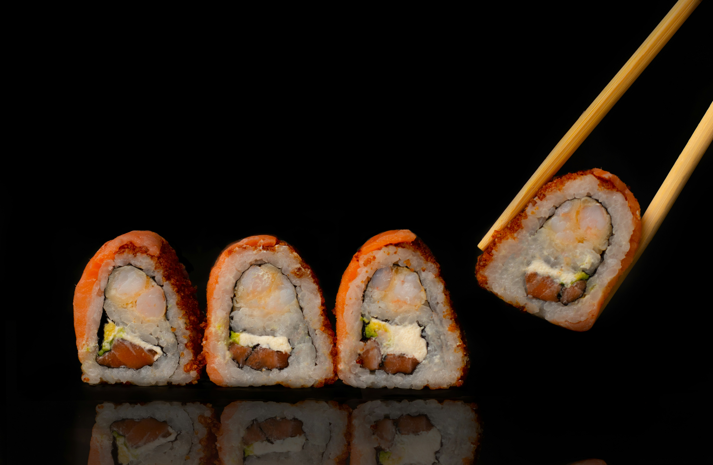

Cucumber and Avocato Sushi

Make avocado rolls at home with this easy vegetarian sushi recipe. Serve with wasabi, pickled ginger, and soy sauce.
Ingredients
- 1 1/4 cups of water
- 1 cup white rice
- 3 tablespoons rice vinegar
- 4 sheets nori
- 1 medium avocado
Steps
- Combine water and rice and bring to a boil. reduce heat and wait 20 minutes. Set aside
- Cover a bamboo sushi mat with plastic grap. Spread rice evenly onto nori sheet.
- roll over cucumber and avocado.
- cut with a sharp knife until you have 6 pieces.
Home
Photo by Mahmoud Fawzy on Unsplash